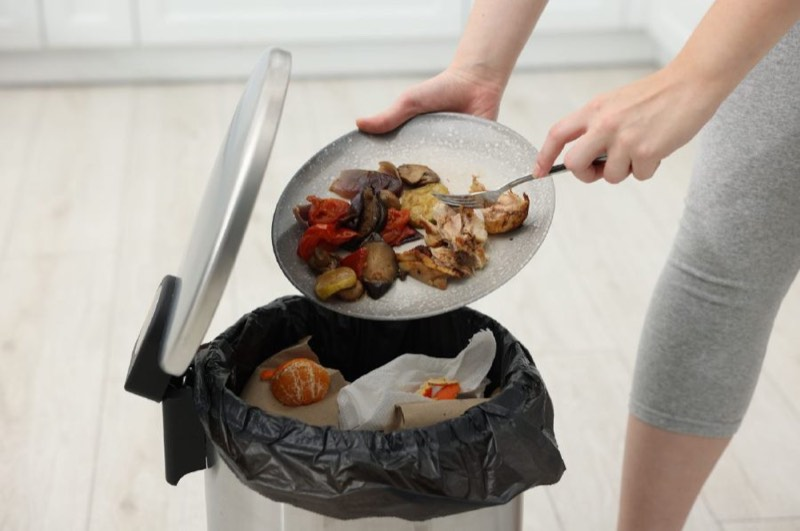
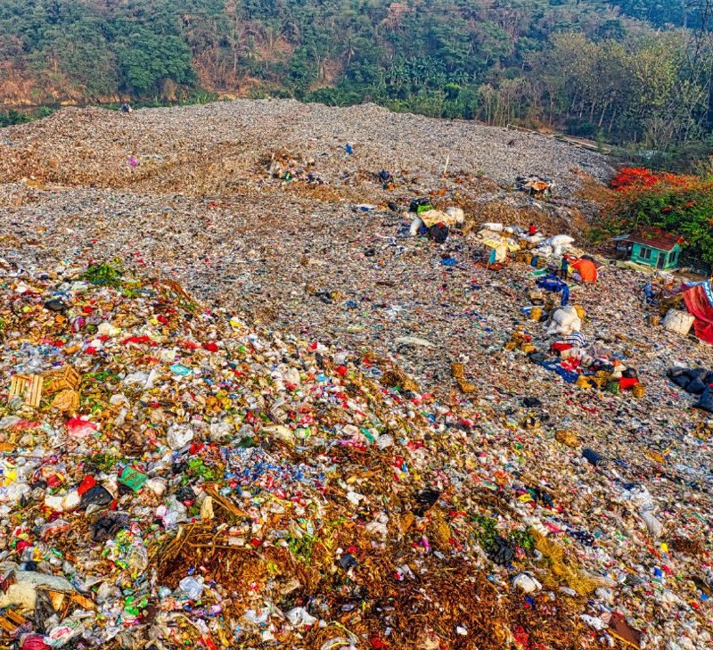
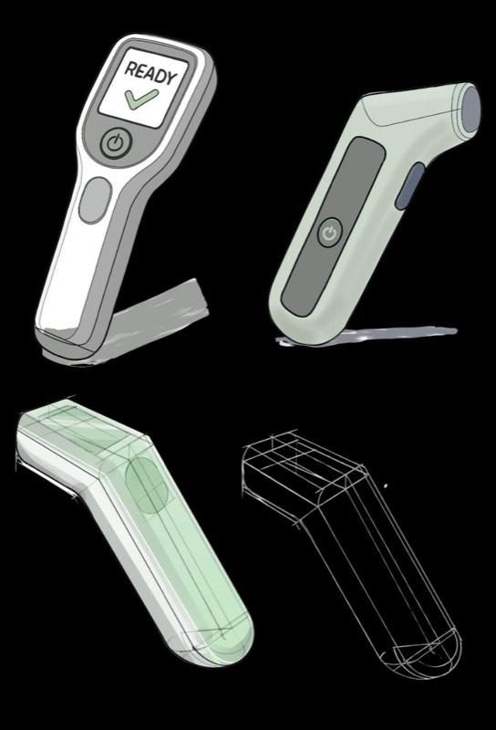
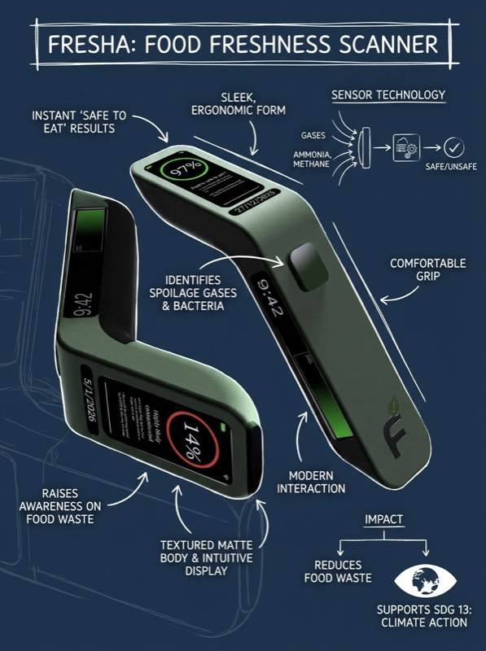

More work · Product design
Fresha
A handheld scanner that detects spoilage gases and bacteria to give instant food-safety results, helping people see what is still safe to eat and cutting waste in the process.

Problem
A third of all food gets thrown away, often on a guess.
Wasted food uses up resources and contributes up to 10% of greenhouse gas emissions. People often can’t tell whether food is still safe to eat, so it goes in the bin.
- 9.52m
- tonnes of food wasted in the UK every year
- £14bn
- the estimated value of food UK households throw away each year


Sketch development
Form and grip exploration
A one-handed body with a fold-out stand, a clear READY state, and a sensor head that sits close to the food without touching it.


Storyboard
Scan, result, reward
Unsure whether the leftovers are safe, the user scans them for an instant result. A green light means the food is safe, adds reward points, and saves another unnecessary bin trip.
 01 Leftovers
01 Leftovers 02 Doubt
02 Doubt 03 Scan
03 Scan 04 Result
04 Result 05 Reward
05 Reward 06 Eat
06 Eat
Three states
The result reads at a glance.
- 97% · Safe to eat
- Green ring, points added, and the CO₂ the user avoided by not binning it.
- 48% · Uncertain
- The database can’t verify the extent of contamination, so the device says so rather than guessing.
- 14% · Likely contaminated
- Red ring, with composting suggested instead of the bin.

